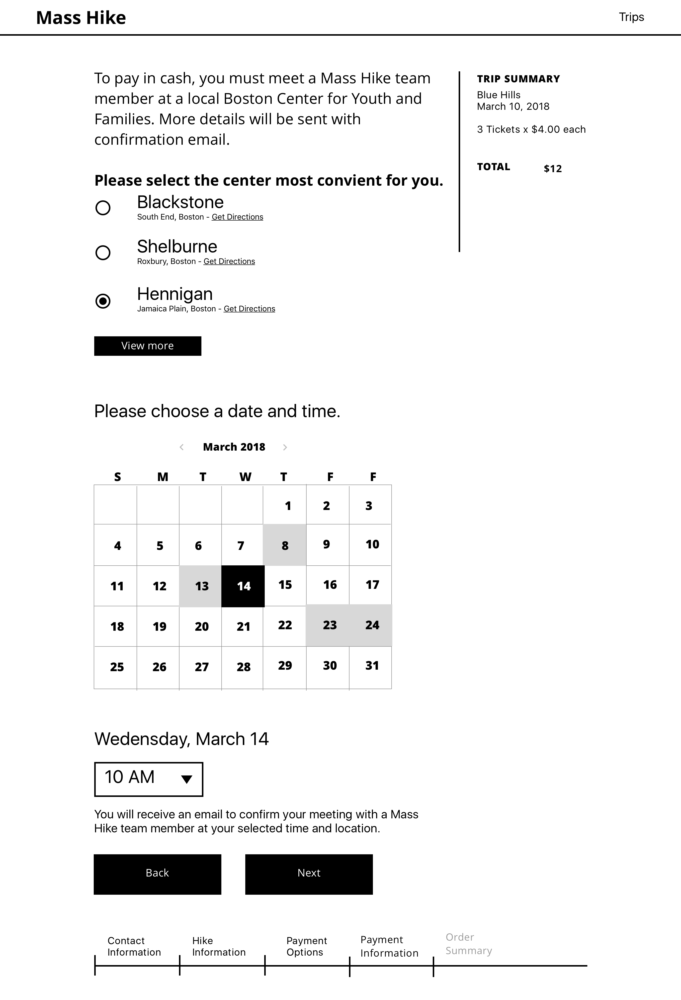
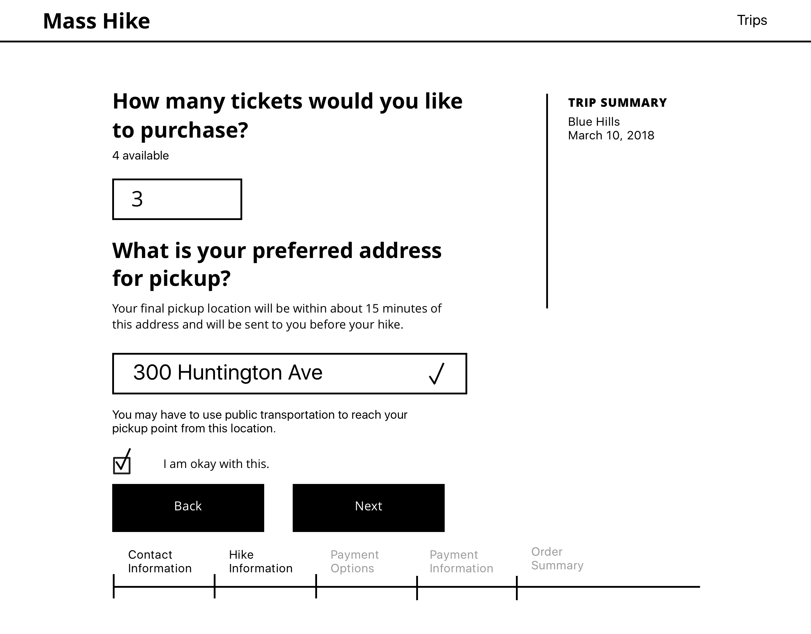
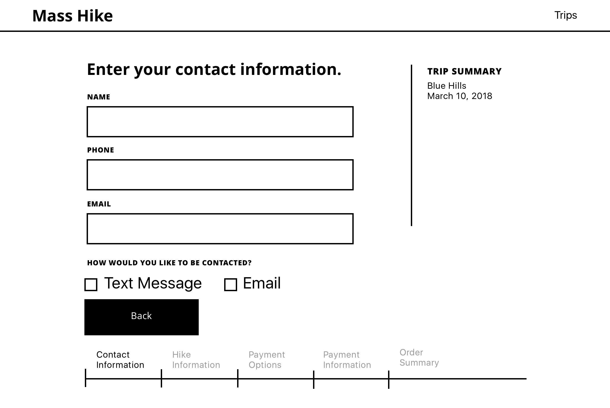
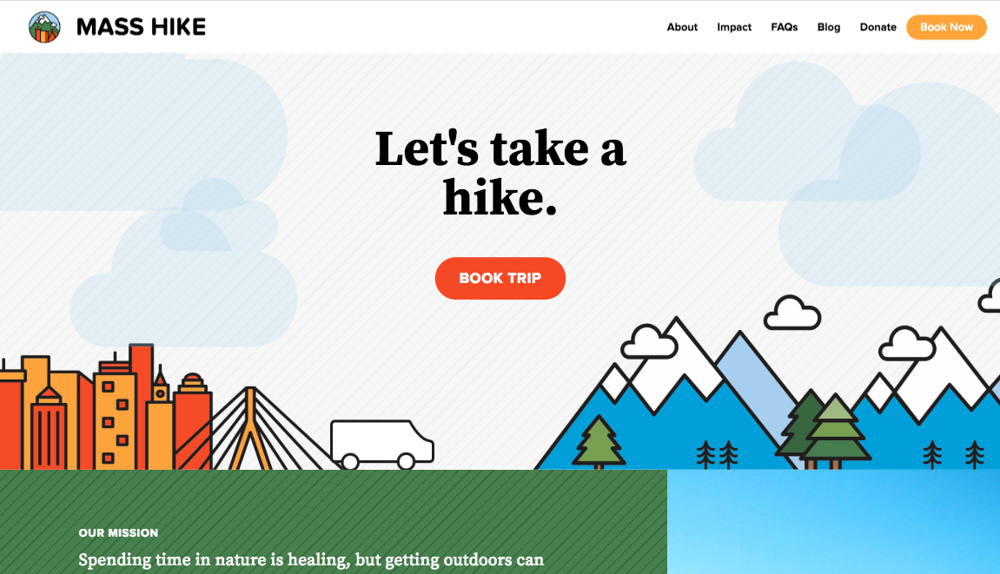

User Experience and Interface Design for a non-profit focused on making nature more accesible.
Done in collaboration with Camden Phalen, McKenna Shuster, Matthew Panzer, and Vinny Carlino.
During my second semester with Scout, I worked with Mass Hike. Mass Hike is a non-profit focused on making nature more accessible for Bostonians. Mass Hike organizes trips and provides transportation to and from local reservations and parks. From there customers are free to roam as they please, or go on a hike with a Mass Hike team member. Mass Hike's target audiences are two very distinct groups: young professionals and low income communities, who both have a difficult time making it out of the city. Mass Hike needed a brand that matched their unique mission, a marketing website that captured the fun of nature, and a ticket-purchasing system that was simple and easy to use.
For this project, I was the UX and UI designer. I had never even opened Sketch and now I was tasked with wireframing and designing a whole booking platform and marketing website. Although I started as a fish out of water, I grew more and more comfortable with Sketch and wireframing and designing for the web in general, thanks to my project lead (Camden Phalen) and Scout’s Design Director (Julie Tennett).
The aspect of this project I am most proud of is the booking platform. Through user research we discovered that members of the low income community often prefer paying in cash. If we only allowed users to purchase tickets via credit or debit cards, we were making Mass Hike (and by extension nature) inaccessible. I focused on coming up with a solution which would allow users to pay with card or cash. The solution we developed allowed users who wanted to pay in cash to set up a meeting with a Mass Hike team member at a local community center and having the transaction take place there. This allows Mass Hike to not have to wait till the day of the trip to receive payment and allows users to guarantee themselves a spot in advanced, whether they are using cards or cash. A select set of wireframes for this experience are below, the booking platform wireframes can be found on InVision.
After going though the wireframing process, it was time to apply the brand (designed by McKenna). Just like UX, this was my first time doing UI. With the help of my team members and Julie, I was able to create a playful website, reflective of Mass Hike’s dedication to making nature accessible and fun. Below are a few of my favorite screens, however the full site can be accessed at masshike.org, thanks to our developers (Camden, Matthew, and Vinny) who worked endlessly to build the front-end and back-end for both the marketing website and booking platform.

Reflection
Mass Hike was one of the most valuable projects I have ever worked on. I learned SO much in those four months and I was able to jump in to this incredible projects. Looking back, I wish my team and I were more cognizant of accessibility, and that is definitely the one thing I would change about this project. As I grow as a designer, accessibility has become more and more important to me. So I can’t go back in time and tweak colors and font styles, but I can use this experience to learn how to do better!
For this project, I was the UX and UI designer. I had never even opened Sketch and now I was tasked with wireframing and designing a whole booking platform and marketing website. Although I started as a fish out of water, I grew more and more comfortable with Sketch and wireframing and designing for the web in general, thanks to my project lead (Camden Phalen) and Scout’s Design Director (Julie Tennett).
The aspect of this project I am most proud of is the booking platform. Through user research we discovered that members of the low income community often prefer paying in cash. If we only allowed users to purchase tickets via credit or debit cards, we were making Mass Hike (and by extension nature) inaccessible. I focused on coming up with a solution which would allow users to pay with card or cash. The solution we developed allowed users who wanted to pay in cash to set up a meeting with a Mass Hike team member at a local community center and having the transaction take place there. This allows Mass Hike to not have to wait till the day of the trip to receive payment and allows users to guarantee themselves a spot in advanced, whether they are using cards or cash. A select set of wireframes for this experience are below, the booking platform wireframes can be found on InVision.



In these wireframes we solved issues like paying in cash, Mass Hike needing users pick-up location, and allowing users to be contacted by phone, email, or both!
After going though the wireframing process, it was time to apply the brand (designed by McKenna). Just like UX, this was my first time doing UI. With the help of my team members and Julie, I was able to create a playful website, reflective of Mass Hike’s dedication to making nature accessible and fun. Below are a few of my favorite screens, however the full site can be accessed at masshike.org, thanks to our developers (Camden, Matthew, and Vinny) who worked endlessly to build the front-end and back-end for both the marketing website and booking platform.


Above are the donate, home, and trip listing page.
Reflection
Mass Hike was one of the most valuable projects I have ever worked on. I learned SO much in those four months and I was able to jump in to this incredible projects. Looking back, I wish my team and I were more cognizant of accessibility, and that is definitely the one thing I would change about this project. As I grow as a designer, accessibility has become more and more important to me. So I can’t go back in time and tweak colors and font styles, but I can use this experience to learn how to do better!